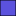

<!doctype html>
<html lang="en">
    <head>
        <meta charset="utf-8">
        <title>WebGIS Planoclass</title>
        <link rel="icon" href= "https://i.ibb.co/4PbJWWM/LOGO-UNDIP-1.png" type=”image/x-icon”/>
        <link rel="shortcut icon" href= "https://i.ibb.co/4PbJWWM/LOGO-UNDIP-1.png" type=”image/x-icon”/> 
        <meta http-equiv="X-UA-Compatible" content="IE=edge">
        <meta name="viewport" content="initial-scale=1,user-scalable=no,maximum-scale=1,width=device-width">
        <meta name="mobile-web-app-capable" content="yes">
        <meta name="apple-mobile-web-app-capable" content="yes">
        <link rel="stylesheet" href="css/leaflet.css"><link rel="stylesheet" href="http://maxcdn.bootstrapcdn.com/font-awesome/4.6.1/css/font-awesome.min.css"><link rel="stylesheet" href="css/L.Control.Locate.min.css">
        <link rel="stylesheet" href="css/qgis2web.css">
        <link rel="stylesheet" href="css/Control.OSMGeocoder.css">
        <link rel="stylesheet" href="css/leaflet-measure.css">
        <link rel="stylesheet" href="plugins/betterscale/L.Control.BetterScale.css" />
        <link rel="stylesheet" type="text/css" href="plugins/NavBar/Leaflet.NavBar.css">
        <style>
        html, body, #map {
            width: 100%;
            height: 100%;
            padding: 0;
            margin: 0;
        }
        </style>
        <title></title>
    </head>
    <body>
        <div id="map">
        </div>
        <script src="js/qgis2web_expressions.js"></script>
        <script src="js/leaflet.js"></script><script src="js/L.Control.Locate.min.js"></script>
        <script src="js/leaflet.rotatedMarker.js"></script>
        <script src="js/leaflet.pattern.js"></script>
        <script src="js/leaflet-hash.js"></script>
        <script src="js/Autolinker.min.js"></script>
        <script src="js/rbush.min.js"></script>
        <script src="js/labelgun.min.js"></script>
        <script src="js/labels.js"></script>
        <script src="js/Control.OSMGeocoder.js"></script>
        <script src="js/leaflet-measure.js"></script>
        <script type="text/javascript" src="plugins/NavBar/Leaflet.NavBar.js"></script>
        <script src="plugins/betterscale/L.Control.BetterScale.js"></script>
        <script src="data/admin_1.js"></script>
        <script src="data/ews_2.js"></script>
        <script>
        var highlightLayer;
        function highlightFeature(e) {
            highlightLayer = e.target;

            if (e.target.feature.geometry.type === 'LineString') {
              highlightLayer.setStyle({
                color: '#ffff00',
              });
            } else {
              highlightLayer.setStyle({
                fillColor: '#ffff00',
                fillOpacity: 1
              });
            }
            highlightLayer.openPopup();
        }
        var map = L.map('map', {
            zoomControl:true, maxZoom:28, minZoom:1
        }).fitBounds([[-7.12142001872,110.237904959],[-6.92576428792,110.564029491]]);
        var hash = new L.Hash(map);
        map.attributionControl.addAttribution('<a href="https://github.com/tomchadwin/qgis2web" target="_blank">qgis2web</a>');
        L.control.locate().addTo(map);
//Title
var title = new L.Control();
		title.onAdd = function (map) {
		   this._div = L.DomUtil.create('div', 'info');
		   this.update();
		   return this._div;
		};
		title.update = function () {
		   this._div.innerHTML = '<h2>Peta Sebaran Early Warning System</h2>KOTA SEMARANG'
		};
		title.addTo(map); 

        var measureControl = new L.Control.Measure({
            primaryLengthUnit: 'meters',
            secondaryLengthUnit: 'kilometers',
            primaryAreaUnit: 'sqmeters',
            secondaryAreaUnit: 'hectares'
        });
        measureControl.addTo(map);
        var bounds_group = new L.featureGroup([]);
        function setBounds() {
        }
        var overlay_OSM_0 = L.tileLayer('https://tile.openstreetmap.org/{z}/{x}/{y}.png', {
            opacity: 1.0
        });
        overlay_OSM_0.addTo(map);
        map.addLayer(overlay_OSM_0);
        function pop_admin_1(feature, layer) {
            layer.on({
                mouseout: function(e) {
                    for (i in e.target._eventParents) {
                        e.target._eventParents[i].resetStyle(e.target);
                    }
                    if (typeof layer.closePopup == 'function') {
                        layer.closePopup();
                    } else {
                        layer.eachLayer(function(feature){
                            feature.closePopup()
                        });
                    }
                },
                mouseover: highlightFeature,
            });
            var popupContent = '<table>\
                    <tr>\
                        <td colspan="2">' + (feature.properties['kec'] !== null ? Autolinker.link(String(feature.properties['kec'])) : '') + '</td>\
                    </tr>\
                </table>';
            layer.bindPopup(popupContent, {maxHeight: 400});
        }

        function style_admin_1_0() {
            return {
                pane: 'pane_admin_1',
                opacity: 1,
                color: 'rgba(0,0,0,1.0)',
                dashArray: '',
                lineCap: 'butt',
                lineJoin: 'miter',
                weight: 1.0, 
                fill: true,
                fillOpacity: 1,
                fillColor: 'rgba(91,82,221,1.0)',
            }
        }
        map.createPane('pane_admin_1');
        map.getPane('pane_admin_1').style.zIndex = 401;
        map.getPane('pane_admin_1').style['mix-blend-mode'] = 'normal';
        var layer_admin_1 = new L.geoJson(json_admin_1, {
            attribution: '<a href=""></a>',
            pane: 'pane_admin_1',
            onEachFeature: pop_admin_1,
            style: style_admin_1_0,
        });
        bounds_group.addLayer(layer_admin_1);
        map.addLayer(layer_admin_1);
        function pop_ews_2(feature, layer) {
            layer.on({
                mouseout: function(e) {
                    for (i in e.target._eventParents) {
                        e.target._eventParents[i].resetStyle(e.target);
                    }
                    if (typeof layer.closePopup == 'function') {
                        layer.closePopup();
                    } else {
                        layer.eachLayer(function(feature){
                            feature.closePopup()
                        });
                    }
                },
                mouseover: highlightFeature,
            });
            var popupContent = '<table>\
                    <tr>\
                        <td colspan="2">' + (feature.properties['Name'] !== null ? Autolinker.link(String(feature.properties['Name'])) : '') + '</td>\
                    </tr>\
                    <tr>\
                        <td colspan="2">' + (feature.properties['link'] !== null ? Autolinker.link(String(feature.properties['link'])) : '') + '</td>\
                    </tr>\
                </table>';
            layer.bindPopup(popupContent, {maxHeight: 400});
        }

        function style_ews_2_0() {
            return {
                pane: 'pane_ews_2',
                radius: 4.0,
                opacity: 1,
                color: 'rgba(0,0,0,1.0)',
                dashArray: '',
                lineCap: 'butt',
                lineJoin: 'miter',
                weight: 1,
                fill: true,
                fillOpacity: 1,
                fillColor: 'rgba(228,226,0,1.0)',
            }
        }
        map.createPane('pane_ews_2');
        map.getPane('pane_ews_2').style.zIndex = 402;
        map.getPane('pane_ews_2').style['mix-blend-mode'] = 'normal';
        var layer_ews_2 = new L.geoJson(json_ews_2, {
            attribution: '<a href=""></a>',
            pane: 'pane_ews_2',
            onEachFeature: pop_ews_2,
            pointToLayer: function (feature, latlng) {
                var context = {
                    feature: feature,
                    variables: {}
                };
                return L.circleMarker(latlng, style_ews_2_0(feature));
            },
        });
        bounds_group.addLayer(layer_ews_2);
        map.addLayer(layer_ews_2);
        var osmGeocoder = new L.Control.OSMGeocoder({
            collapsed: false,
            position: 'topright',
            text: 'Search',
        });
        osmGeocoder.addTo(map);
        var baseMaps = {};
        L.control.layers(baseMaps,{' ews': layer_ews_2,' admin': layer_admin_1,"OSM": overlay_OSM_0,}).addTo(map);
        setBounds();

    //plugin betterscale
	L.control.betterscale({
	   metric: true,
	   imperial: false
	}).addTo(map);

        </script>
    </body>
</html>
